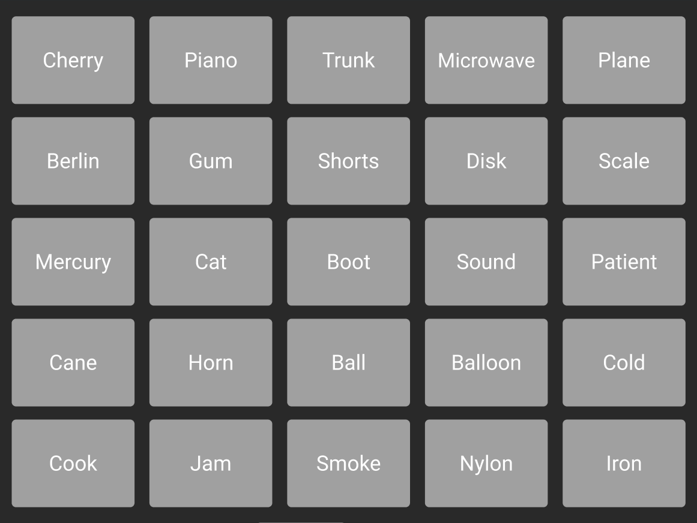

Masterminds is a game with two teams where each team has a Mastermind and Minion(s). Each team is assigned a subset of words from a set of 25 words. The Mastermind will try and get their Minion(s) to guess this specific subset without clicking any of the other 25 words. Whichever team successfully guesses all of their words first wins!
There are two teams for players to choose from. This includes the Green Team and the Purple Team.
In these teams, users can choose to either by the Mastermind or one of the Minions. If you don’t want to be on a team, you can also join the game as a
spectator.
The Mastermind is responsible for giving clues to their team to guess. Both team’s Mastermind knows exactly which words relate to which team.
Minions are responsible for guessing words that relate to the clues given by their Mastermind. Minions have no indication which words relate to which team until they guess.
Once it’s your turn, the Mastermind will have a chance to create a clue for their team. The Mastermind can type in a word and assign a number to the clue. The number
defines how many words are related to this specific clue.
There are a couple restrictions to what words can be used for clues. These include:
After a Mastermind has given a clue, the Minions can guess words that relate to it. Minions can guess as many words as the number the Mastermind entered with the
clue.
If they want to indicate if they think a word might be related, they can click the card and highlight it.
If they want to confirm their guess, they can click the orange “Guess” button on the word. If their guess is correct, the word will highlight in their team colour and
they can continue guessing.
There are 3 ways a team’s turn can end.
A team wins once they have guessed all of their words correctly. If any team accidentally guesses the bomb word (highlighted in orange), then that team automatically loses.